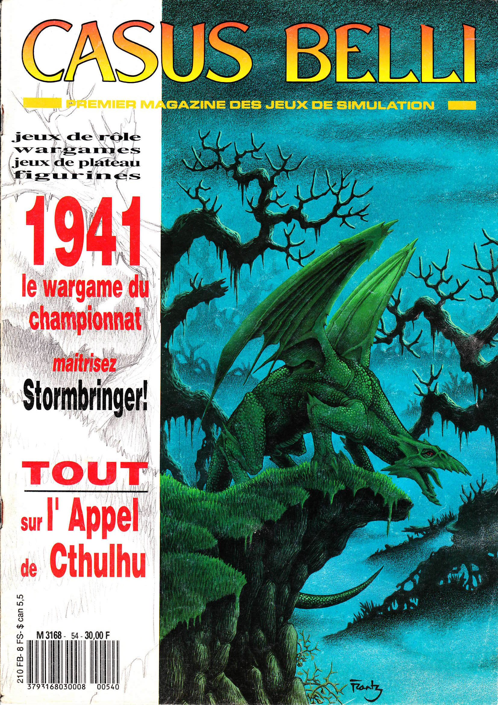
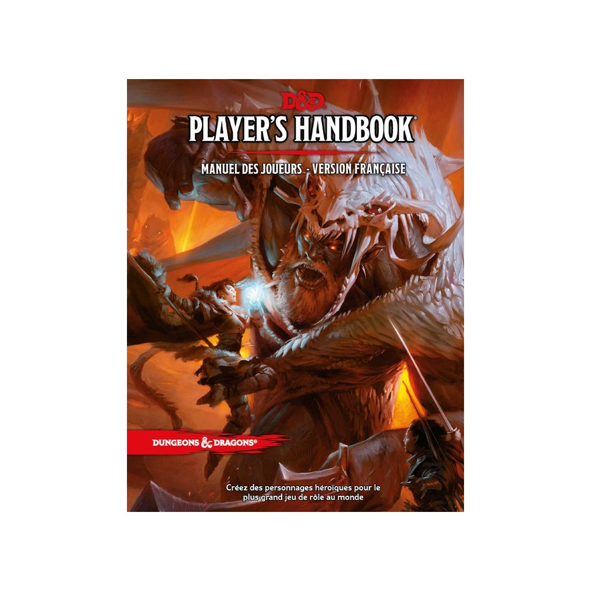

Pour conjurer cette semaine un peu lugubre, des actualités du passé plus riantes alors qu’on célèbre aujourd’hui un fameux 35ème anniversaire !
Au tour donc de Casus Belli n°54 d’être décortiqué et de clôturer cette année 1989 ! Paru avec un peu de retard pour cause de parution de SimulacreS comme le confesse l’édito, il arrive peu après la chute du Mur de Berlin mais a dû être bouclé juste avant… On parlera pourtant d’Allemagne dans ce numéro, mais avec un wargame complet pour simuler le début de l’opération Barbarossa. La couverture est de Frantz Auberlet, dont on avait évoqué la mémoire avec le numéro 50.

Après une année 1989 certes riche en événement mais qui s’annonçait sans grand bouleversement, ce dernier bimestre vient complètement changer la donne et la face du monde. Casus ne s’en fait pas écho puisque le numéro a été terminé entre-temps. Les yeux de la planète vont être braqués sur l’Europe de l’Est mais il se passe beaucoup de choses également ailleurs, et nous allons commencer par celles-ci.
On débute outre-atlantique où le Chili accélère aussi son processus de démocratisation avec le départ du Général Pinochet en décembre, après des élections libres, même si le dictateur va garder une immunité encore pour quelques années. Mais c’est un symbole fort qui se produit dans la disparition des dictatures d’Amérique Latine qui ont plombé la décennie 1980. Malheureusement, ce n’est pas non plus une période apaisée qui s’installe : ainsi, le Salvador est toujours en proie avec la guerre civile générée par la lutte anti-communiste téléguidée par les USA, et qui aboutit au meurtre retentissant de 6 jésuites et 2 femmes. Un peu plus au sud, au Panama, c’est encore les USA qui interviennent pour renverser Manuel Noriega lors de l’opération Just Cause, sur fond de corruption et de trafic de drogue qui devient endémique. En effet, à peine plus loin, le Cartel de Medellin est au fait de sa puissance et des actions violentes sur fond d’élections présidentielles, avec les attentats particulièrement meutriers sur un vol intérieur (Vol 203 d’Avianca) puis au centre de Bogota (Immeuble du Departamento Administrativo de Seguridad, attaqué avec 500 kg de dynamite). Plus au nord, chez l’Oncle Sam, c’est surtout la diffusion du premier épisode de la célébrissime série satirique des Simpson qui marque cette fin d’année 1989.
Le contexte est aussi agité, sans surprise, dans le Maghreb et le Proche Orient. On avait déjà évoqué l’Algérie où les tensions intégristes continuent de monter, alors que le FIS ne prétend pas encore au pouvoir, mais attend son heure. Son idéologie prônant le retour à la loi islamique se diffuse dans la société et alimente des démonstrations de force, comme ce 21 décembre où près de 100 000 femmes manifestent avec leurs maris pour dénoncer « la recrudescence des agressions contre l’islam et les musulmans ». Un peu étonné par l’ampleur de cette manifestation alors que la décennie noire n’a pas encore débuté, j’ai trouvé cet article en ligne de Lutte Ouvrière au gré de mes recherches : même si ça peut sembler très marqué, j’ai trouvé qu’il redonnait un portrait assez saisissant d’une situation qui se dégradait et une photo de l’Algérie avant qu’elle ne bascule dans la guerre civile. A lire pour ceux qui veulent approfondir :
https://www.lutte-ouvriere.org/mensuel/ … n-des.html
Même situation en Jordanie où à l’issue d’élections, cette fin 1989 voit la même progression de l’islamisme, sans que cela aura les mêmes conséquences pour ce pays. Mais cette tendance de fond dans les pays du Maghreb et du Proche-Orient semble prendre son essor alors qu’on reste encore dans le monde bipolaire de la Guerre Froide.
En Afrique, plus à l’ouest, c’est aussi le début de la guerre civile au Libéria, sous l’initiative de Charles Taylor qui ensuite s’étendra au Sierra Leone, et empoisonnera le continent de ces confilts locaux et destructeurs, qui restent largement ignorées de nos latitudes.
En France, avant qu’on ne s’intéresse évidemment au reste de l’Europe, l’actualité ne s’est pas particulièrement emballée et le seul fait notable est l’élection en novembre, à l’occasion d’une législative partielle, de Marie-France Stirbois à Dreux comme seule députée FN à l’Assemblée Nationale. Cet article dans le Nouvel Observateur de la première semaine de décembre n’a semble-t-il pas pris une ride, dans ses analyses comme dans ses imprécations, et la seule différence avec maintenant est la stupeur de ce résultat en novembre 1989 :
http://referentiel.nouvelobs.com/archiv … 30_072.pdf
http://referentiel.nouvelobs.com/archiv … 30_073.pdf
Pas vraiment d’autres actualités en France, malgré les bouleversements à l’est de nos frontières : en fait, sur ce dernier bimestre de 1989, les multiples événements qui vont se produire en Europe sont encore suivis de façon attentiste, voire incrédule, depuis notre pays.
Parlons donc de la Chute du Mur ce 9 novembre 1989. Si je demandais que faisiez-vous ce jour, comme on sait en général le rapporter pour un 11 septembre 2001, pas sûr que vous puissiez me répondre, soit parce qu’encore un peu trop jeune pour vivre cet événement en direct ? soit probablement aussi parce que cette Chute se fait en toute fin de journée de ce 9 novembre, où on n’était pas encore bombardé d’infos en continu. L’événement se produit après une conférence de presse surréaliste du porte-parole du Gouvernement de la RDA qui commente une nouvelle réglementation libéralisant les voyages des citoyens est-allemands, après les exodes massifs des mois précédents via la Hongrie, et la déclare effective immédiatement ! Je remets l’extrait qui a fait basculer l’Histoire ici :
https://www.ouest-france.fr/europe/alle … in-6596072
Les garde-frontières qui tiraient jusqu’ici à vue sur quiconque tentait de franchir le Mur sont débordés, et n’ont pas d’autre choix que de se plier aux nouvelles directives. Les populations de Berlin Ouest et Est s’agglutinent alors en haut du Mur de la honte, et une page d’Histoire se tourne. Il est cependant encore trop tôt en cette fin d’année 1989 pour parler de réunification, alors qu’à peine un mois plus tôt la RDA célébrait son 40ème anniversaire. Mais c’est aussi lors de cet anniversaire que Gorbatchev donnait le baiser de la mort à Erich Honecker qui allait laisser la place à Egon Krenz, et donc au début de libéralisation du régime, avant sa disparition définitive moins d’un an plus tard.
Ailleurs, ce qui est encore la Tchécoslovaquie entre aussi dans ce même processus, avec la Révolution de Velours, en portant Vaclav Havel qui a été emprisonné début 1989 à sa tête. Puis, dans un horizon de temps similaire, c’est au tour de la Bulgarie de faire sa révolution. Seule la Roumanie éprouvera un événement bien plus violent, alors que le pays est encore tenu de main de fer par le couple Caucescu et la police politique de la Securitate. Le basculement de la Roumanie se fait via des manipulations qui, si elles visent les mêmes objectifs de libéralisation et de démocratie que dans les autres républiques populaires, viennent jeter un voile trouble sur le déroulé des événements : faux charniers de Timisoara, manifestations populaires qui dégénèrent en affrontements armés, pour conclure par la parodie de procès filmé au camescope et l’exécution du couple Caucescu le 25 décembre, et vient donc conclure avec une fausse note qui rappelle la réalité politique par rapport à l’idéal humain de ces deux mois qui ont préparé la venue de notre XXIème siècle.
Quelques ressources additionnelles pour montrer la stupéfaction d’alors, même au plus haut niveau politique, et l’effondrement soudain d’un Mur dont on croyait qu’il faudrait encore des générations pour l’abattre petit à petit :
https://www.ouest-france.fr/europe/alle … ue-6601703
https://www.ouest-france.fr/europe/alle … ne-6597515
Revenons maintenant à nos préoccupations rôlistes avec notre Casus Belli 54. C’est l’Hiver, la saison morte pour les GN, même si les conventions de JDR se succèdent : on annonce déjà pour la prochaine année 1990 les grosses machines que sont le Jet d’Or à Vitrolles et la Manu à Nantes. Quant à Paris, ce sera l’effervescence avec le Salon des Jeux à la Porte de Versailles qui fait déjà sa publicité pour avril 1990, et le Premier Salon National des Jeux de Simulation à l’Aquaboulevard pour février qui vient en concurrence pour organiser un événement complètement dédié aux jeux, et pas le parent pauvre du Salon de la Maquette (la tentative sera malheureusement éphémère).
Pas mal de retour aussi sur les événements passés, dont certains remontent à l’été mais n’ont pas pu être insérés dans le numéro précédent. Et après avoir revu Origins 89, c’est au tour de la Gencon 89 d’avoir son compte-rendu : une Gencon axée cette année autour de la mouvance Cyberpunk avec Mike Pondsmith en superstar et la sortie tonitruante du Shadowrun de FASA. Signe des temps, Gygax est absent et TSR est aussi dans cette mouvance techno en lançant la nouvelle gamme Spelljammer.
Casus rapporte aussi les tendances du moment aux US, qui annoncent en partie les jeux de la décennie 1990 : plus axé sur les joueurs (coucou Vampire à venir) et moins élitiste (euh pour ça c’est globalement raté). Casus mentionne aussi les déboires de Games Workshop aux US, mais sans plus de précision, épisode qui n’est bizarrement pas relaté dans l’auto-hagiographie de Sir Ian Livingstone (j’en avais fait une revue désappointée ici).
On continue sur le rédactionnel avant d’entamer les jeux avec le courrier, qui est occupé en partie par les réactions minitéliques sur la tribune de Cornélia et qui préfigurent les débats enflammés des forums Internet à venir. On y verra des propos désobligeants (MJ tyrannique), voire condescendants (doute sur ses capacités de MJ). Je remettrai des extraits à l’occasion mais on n’aura finalement pas devinée l’identité de cette fameuse Cornélia (sa tribune est toujours lisible ci-dessus  )
)
Les inspis Bouquins et BD sont toujours à la fin, avec la Ludotique. Toujours beaucoup de rééditions, comme pour le numéro précédent, chez Roland Wagner ce qui donne une moisson de références et de signatures déjà connues : du Vance, du Zimmer Bradley, du K. Dick… On trouvera cependant d’autres signatures connues dans les nouveautés de cette fin 1989 : La quête du dragon d’Anne McCaffrey, Le comte Airain de Moorcock, La Côte dorée de Stanley Robinson, ou encore le nouveau tome de la série des Voleurs de Rêves de Jean-Marc Ligny. Et enfin en plus confidentiel, Desolation Road de Ian MacDonald que Roland recommande vivement.
Pour les BD, pas mal de titres emblématiques également : le tome 2 de La sueur du soleil, le tome 4 des 7 vies de l’épervier de Juillard, disparu récemment, le tome 2 d’Aquablue où André Foussat ne manque pas maintenant de conseiller le nouveau SimulacreS pour reprendre ces univers (ce qui va se concrétiser pour Aquablue dès le prochain numéro). Et puis évidemment Batman (Dark Knight de Miller) qui reprend sa carrière dans l’Hexagone grâce la batmania de l’année 1989, et la continuation de V pour Vendetta. Enfin la Ludotique parle longuement de Pool of Radiance, un des premiers jeux (réussi ?) informatiques dans l’univers des Royaumes Oubliés (plus précisément la Moonsea), avec la sortie concomitante d’un supplément dédié par TSR, Ruins of Adventure (fiché sur le GROG pour la curiosité).
Les prévisions météoludiques pour cette fin d’année annoncent à la fois ce qu’on mettra sous le sapin, et les réjouissances à venir pour 1990. Du côté des VF, c’est INS / MV prévu pour février qui fait ici sa première apparition, prévu pour être édité chez CROC (comme Bitume et Animonde) et qui n’a pas encore rejoint l’écurie Siroz, elle-même très active sur les jeux sur lesquels elle s’est rencentrée : sortie de Metal Fantasy pour Whog Shrog, de Marxmen 12.35 pour Berlin XVIII et de Masques par @Tristan pour Athanor.
Dragon Radieux continue à soutenir massivement et avec raison Hurlements : après le n°2 de Hurlelune sur le XIIème siècle, voici le n°3 déjà de prévu spécial scénarios. Hexagonal annonce la traduction de Rolemaster, dont une publicité pleine page inattendue du Virgin Megastore des Champs-Elysées proposant de le retrouver dans ses rayons !! Jeux Descartes continue la production Warhammer avec Mort sur le Reik à venir, et Les Œufs de Karlath, première campagne de création française pour l’AdC (OK pour la version 90…) annoncé aussi pour début 1990. Chez Oriflam, c’est aussi presque une création française qui se profile avec la traduction largement remaniée de l’Île Brisée pour Hawkmoon. Et comme le JDR semble encore bien se porter, on a aussi les nouveaux éditeurs avec Flamberge et ses Divisions de l’Ombre (avec un écran qui récolte un 20/20 de Casus, puis le supplément European Entertainment à venir), et un nouvel éditeur venu, D3, qui propose un nouveau jeu de rôle, Alter Ego, disparu des mémoires ?
Enfin, le feuilleton Transecom a connu des rebondissements depuis le numéro précédent : après l’arrêt de sa licence par TSR le 31 juillet, Transecom avait obtenu un délai jusqu’au 31 octobre pour continuer à vendre les produits TSR. La VF du Player’s Guide de la 2ème édition ayant été démarré avant la rupture de la licence, elle était prévue d’être encore vendue par Transecom. Mais au lieu d’être disponible plus ou moins à la rentrée, elle ne débarque finalement avec les retards pris que le 26 octobre : c’est 5000 exemplaires qui déboulent donc pour être écoulés en 5 jours et disparaître ensuite puisqu’elle sera reprise bien plus tard et avec une traduction révisée par TSR directement… C’est le moment de proposer un interlude avec un jeu des 7 erreurs facile :
La version Transecom
La version TSR ensuite
Est-ce que ça ne vous rappelle en souvenir plus récent (et avec un sentiment que l’Histoire bégaie) avec notre 5E actuelle ?
La version GF9 / BBE
La version WOTC (les 7 erreurs sont moins flagrantes, voire inexistantes, et où je me rends compte qu’il n’est pas fiché sur le GROG, m’enfin ??)

On passe sur la production US. On commence par la sortie de Talistanta, encore obscur jeu chez un obscur éditeur, tandis que FASA sort Shadowrun (ainsi que les scénarios DNA / DOA et Mercurial) et Casus annonce que les 40 000 exemplaires tirés sont déjà épuisés ! Pendant ce temps-là, le Cyberpunk de R. Talsorian Games continue de se développer (parution de Near Orbit) et l’éditeur annonce aussi la sortie de Mekton II pour aller braconner sur les plate-bandes de Battletech et rendre la politesse sur Shadowrun.
Du côté de chez ICE, ça sort de tous les côtés : du MERP (Perils on the sea of Rhûn, Treasure of Middle-Earth, du Rolemaster, encore du Space Master (Legacy of the ancients, Vessel Compendium n°3) et même une nouveauté, Cyberspace, qui pour le coup braconnera davantage sur le terrain de Cyberpunk que Shadowrun.
TSR commence pour sa part à lancer une diversification de ses univers, ce qui signera son âge d’or et sa chute. Après une timide reprise de Greyhawk, c’est Spelljammer qui prend le relais. TSR sort aussi le 2ème volume du Monstrous Compendium, où Casus relève que les démons et diables ont disparu, contre-coup de la panique morale aux US.
Enfin WEG a déclenché l’hyperpropulseur sur Star Wars : on est déjà au Galaxy Guide 4 et les modules continuent : Crisis on Cloud City qui fleure bon la mode cyberpunk de notre galaxie pas lointaine, et à coupler avec le Galaxy Guide 2 paru peu avant. Mais on trouvera encore un peu de support de sa gamme Ghostbuster avec le Tobin’s Spirit Guide, avant que celle-ci ne devienne définitivement fantômatique.
Regardons maintenant ce qui est critiqué plus en détail. Malgré les sorties de JDR, Casus semble avoir mobilisé ses forces rédactionnelles sur la sortie de SimulacreS car on trouve seulement 4 Têtes d’Affiche et une Epeuve du Feu sur du JDR. Une Tête d’Affiche est un mini portrait de famille car Croc fait une revue des dernières (et pléthoriques) parutions de SJ Games : les scénars solos pour GURPS Conan, GURPS Cliffhangers pour déjà faire du pulp, et des extensions pour GURPS Supers dont celui s’appuyant sur l’univers de Wildcards, première production d’un GRR Martin alors anonyme, et que Croc commente consterné.
Tristan passe en revue Marxmen 12.35 pour Berlin XVIII, qui consacre son histoire d’amour pour ce jeu et actualité oblige. Les deux dernières critiques sont sur les deux jeux star de la Gencon de cette année 1989. D’abord sur Shadowrun avec un Croc aussi visionnaire dans sa critique du jeu que sur le devenir de GRR Martin : système simple, contexte faible assène-t-il comme verdict ! Et un Jean Balczesak avec un avis mitigé sur le Batman RPG de Mayfair, à cause d’emprunts trop appuyés à du matériel déjà existant. Mais vu le matraquage ambiant de la batmania de l’époque, on comprend le sentiment de trop plein.
L’Epreuve du Feu est consacrée à un jeu US et confidentiel, malgré que Casus en ait déjà parlé : non pas Jorune, mais Ars Magica 2ème édition. C’est Tristan qui signe celle-ci et contrairement à Berlin XVIII qui le verra produire ensuite pour ce jeu, j’ai l’impression que l’histoire d’amour avec Ars Magica n’est pas allée beaucoup plus loin que cette double page : pas de scénario d’introduction, ni d’aide de jeu proposés contrairement à l’habitude des EdF de l’époque. Cela a cependant aidé à ce que ce jeu confidentiel d’un éditeur confidentiel le soit moins de ce côté de l’Atlantique.
Si on est un peu surpris de voir Tristan faire cette épreuve du feu, on pourra l’être encore plus en découvrant le premier Portrait de Famille de l’Appel de Cthulhu, signé pour sa part par Jean Balczesak, avant que ce ne soit Tristan qui nous présente sa bibliothèque dans les futurs numéros de Casus. Ce premier Portrait de Famille a un côté très vintage pour un jeu qui existe depuis 8 ans, mais qui ne s’est pas encore développé comme on le connaît aujourd’hui. Si on trouve déjà quelques classiques qui ont traversé les âges (Les Masques, Le Rejeton d’Azathoth, Les Contrées du Rêve…), on trouve aussi des références depuis longtemps oubliées : Le Supplément de Cthulhu, Fragments d’Epouvante, La Malédiction des Cthoniens, Green and Pleasant Land, ou les versions UK de l’AdC. Amusant à la lecture, surtout si on le relie avec les Portraits de Famille de l’AdC à venir ensuite.
On passe à l’encart scénarios avec la revue en détail de ce numéro 54 :
Panoplie pour un rocker pour Athanor par Pierre Rosenthal : après le scénario d’introduction inintelligible quelques numéros auparavant pour ce jeu tout aussi cryptique, Pierre nous démontre que son autre grande passion est le rock avec ce scénario qui se déroule dans la Nashville du futur en 2306, et avec les conseils de Pierre pour la mise en ambiance musicale (je pense pour la première fois dans Casus !). Petit florilège des extraits musicaux proposés au moins pour ceux contemporains de cette décennie 1980 qui s’échève : du B52’s, du Jean-Michel Jarre, du Richard Clayderman, du David Halliday, du Michael Jackon, du Run DMC, et même du Dorothée, Soldat Louis, Bézu ou Steph’ de Monac (eh ouais !). En revanche, sur le contenu lui-même on y trouvera surtout une enquête un peu banale qui a mal à augurer à quoi on joue réellement avec Athanor, et qui manque à mon sens d’avoir imposé ce jeu comme une alternative française à TORG (une sorte de multivers qui reste dans le contexte terrestre) avant la parution de ce dernier…
Une visite au zoo pour l’Appel de Cthulhu : c’est Frank Stora qui prend ici le relais de la production de Jean Balczesak pour ce jeu, tandis que la signature de Tristan ne pointe toujours pas à l’horizon (il est encore trop occupé avec Hawkmoon et Berlin XVIII). Bon, on comprend que Tristan prendra la suite car même si on ne doute pas de la ferveur que Frank porte à l’AdC (il refera des scénarios dans Casus pour ce jeu), cela reste une histoire un peu plan plan qui est proposée. Elle prend place à Londres en 1922 sur fond de zoo(logie), avec une construction assez bancale et dirigiste, et relativement peu de suspense avant le dénouement final, faute de place pour la développer. A la réflexion, vu le travail de reprise à mener, je pense qu’il y a un intérêt à le porter davantage pour Maléfices, la surcouche Cthulherie n’étant pas bien convaincante.
Passage de relais aussi pour AD&D pour Denis Beck puisque ce scénario, L’armée morte, est signé Angelo Capelli et tient, sans surprise, sa promesse en sous-titre : « retour aux sources : un couloir, un monstre, un trésor ! ». C’est pourtant un scénario de haut niveau (niveau 11) mais qui se justifie surtout par les monstres rencontrés que par l’épaisseur de l’intrigue. Au moins vu le sous-titre, on ne sera pas volé sur la marchandise. Je laisse la parole à @Esbehmj pour savoir si contrairement à moi il en garde un souvenir ému 😄
Dans la grisaille et le sang par Jean Balcezak pour SimulacreS. Jean nous propose donc un scénario pour annoncer la sortie tonitruante du nouvel Hors Série de Casus Belli. Malheureusement, ce n’est pas très réussi car plutôt que de l’inscrire, soit dans un des univers du Hors-Série (et il y avait le choix !), soit dans un univers tiré d’une source populaire (TV, Film, BD, Roman), Jean entreprend de nous décrire un contexte space opera sombre et pas très inspirant, ce qui laisse une place réduite au scénario en tant que tel sur base d’infiltration et de drogue, à l’intérêt quasi nul. On passe donc du Hors Série au Hors Sujet puisque Jean essaye aussi de nous convaincre que le scénario est transposable à plein d’autres jeux (Cyberpunk, Whog Shrog, Les Divisions de l’Ombre, Berlin XVIII). Un bon fumble donc, si ce n’est le plaisir de découvrir dans la maquette de ce scénario les pictogrammes familiers du jeu. Heureusement on verra que Casus sera bien plus inspiré avec le potentiel de SimulacreS dans le prochain numéro 55.
La production des scénarios est complétée avec quelques aides de jeu. D’abord un Profession : Voleur d’Âmes pour Stormbringer 1ère édition (coucou @nonolimitus ) par Eric Simon, mais en moins inspiré que le Profession dédié à Hawkmoon par Tristan du numéro précédent. Et on continue avec la visite de l’univers Goferfinker avec ce troisième et dernier numéro, ici orienté sur la géographie de la contrée. Même si le travail est plus qu’honnête, force est de constater que cet univers n’aura pas autant marqué qu’un Laelith (encore trop proche ?), ou un Paorn…
La partie Wargame est donc surtout occupée pour ce numéro sur le jeu proposé, à partir d’un jeu déjà publié par GDW depuis quelques années. Il restera donc peu de place et celle-ci sera surtout consacrée pour parler de la réédition sous la marque Eurogames des anciens wargames d’International Team : Yom Kippur, Okinawa, Little Big Horn. Et la rubrique Jeu de Plateau présente Fortress America, gros jeu MB en anglais et toujours sous le thème névrosé d’une invasion des USA par les communistes, alors que le Mur vient de s’effondrer… C’était déjà Make America Great Again !
Et on se retrouve maintenant dans deux mois pour se souhaiter une bonne année 1990 !